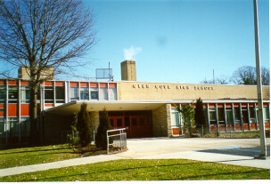

Glen Cove High School
June 2000 Regents Exam Schedule
Built in 1962, Glen Cove High School, serving students in grades nine through twelve, is set on 50 acres of land. The high school's facilities include a library-media center, multi-purpose gymnasium, electronic music lab, technology rooms, cafeterias, lecture hall, elevator, dark room, auditorium, a state-of-the-art intra-district transmission educational television studio, science labs, the J. Cameron Maiden Athletic Field, and the Old Tappan Road sports complex.

The high school's athletic programs include football, baseball, men's and women's soccer, rifle, cross-country, track, wrestling, lacrosse, volleyball, golf, men's and women's basketball, tennis and softball. Award-winning extra-curricular activities include music. Literary, athletic, language, drama, business, government, service, and academic clubs, as well as several school publications. Glen Cove High School has one of the largest computer science programs in the United States. Advanced Placement courses are offered in English, American government, American history, calculus, statistics, biology, chemistry, physics, Spanish, and computer science.
Mr. Lane Schwartz, Principal, can be reached at 759-7261
graduation requirements